Ore
Raw ores, gases, ice, and biological samples harvested from space.
| Name | Rarity | Size | Base Value | Description | |
|---|---|---|---|---|---|
| Adamantite Ore | 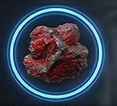 |
legendary | 2 | 800 cr | Near-indestructible crystalline ore of unknown origin. |
| Aluminum Ore | 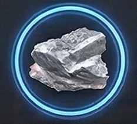 |
common | 1 | 6 cr | Lightweight metal ore for basic hull construction. |
| Antimatter Containment Cell | 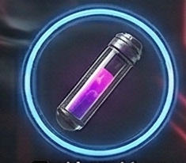 |
legendary | 3 | 800 cr | A trace amount of antimatter naturally occurring in deep asteroid formations, captured in a magnetic containment vessel. Too small to use directly — but enough to seed a larger reaction. |
| Argon Gas | 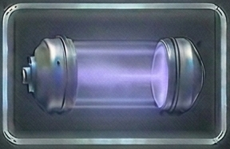 |
common | 1 | 12 cr | Inert gas for shielding during welding and manufacturing. |
| Carbon Ore | 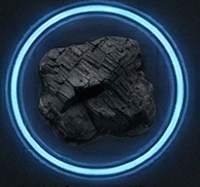 |
common | 1 | 4 cr | Versatile element used in composites and filtration systems. |
| Chlorine Gas | 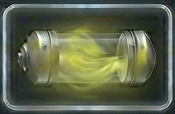 |
uncommon | 1 | 25 cr | Toxic gas used in chemical synthesis and weapons. |
| Cobalt Ore | 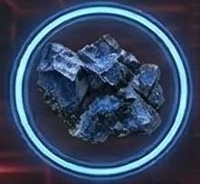 |
uncommon | 1 | 25 cr | Heat-resistant ore used in engine components. |
| Compressed Hydrogen | 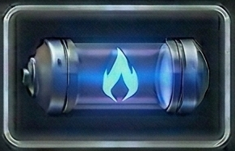 |
common | 1 | 8 cr | Basic fuel source harvested from gas giants and nebulae. |
| Copper Ore | 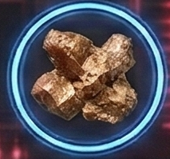 |
common | 1 | 8 cr | Conductive copper ore, essential for electronics. |
| Dark Matter Residue | 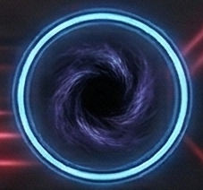 |
legendary | 3 | 700 cr | Condensed dark matter found only in the deepest reaches of the Outer Rim. |
| Darksteel Ore | 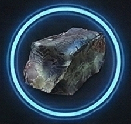 |
exotic | 2 | 350 cr | Impossibly dense ore that forms only under extreme gravitational compression — first identified in black hole accretion disks, now found wherever heat and pressure reach similar extremes. |
| Deuterium Ice | 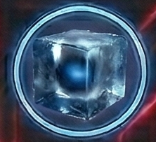 |
rare | 2 | 120 cr | Heavy water ice for advanced fusion reactors. |
| Energy Crystal |  |
rare | 1 | 350 cr | Naturally occurring crystals that store and amplify energy. |
| Exotic Matter | exotic | 2 | 1,200 cr | Strange matter with properties that defy conventional physics. Found only in Voidborn space. | |
| Fluorine Gas | 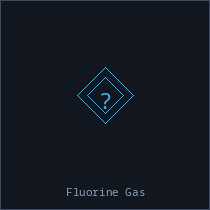 |
rare | 1 | 45 cr | Highly reactive gas for chemical etching and processing. |
| Fury Crystal | 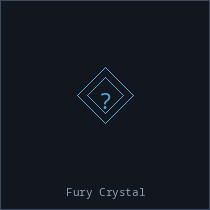 |
exotic | 2 | 320 cr | Superheated crystals from Crimson volcanic worlds, pulsing with thermal energy. |
| Gold Ore | 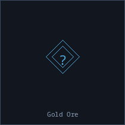 |
uncommon | 1 | 45 cr | Highly conductive precious metal for advanced electronics. |
| Helium Ice | 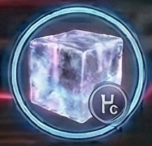 |
rare | 2 | 85 cr | Frozen helium-3 from gas giant atmospheres. Premium fusion fuel. |
| Ion Gas | 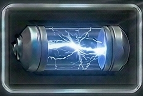 |
uncommon | 1 | 35 cr | Highly charged gas for ion propulsion systems. |
| Iridium Ore | 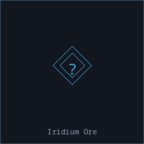 |
rare | 1 | 90 cr | Dense, corrosion-proof metal for high-stress components. |
| Iron Ore | 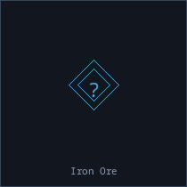 |
common | 1 | 5 cr | Common ferrous ore, the backbone of basic construction. |
| Krypton Gas | 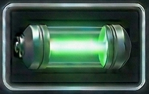 |
rare | 1 | 50 cr | Rare noble gas for high-efficiency lighting systems. |
| Lead Ore | 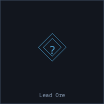 |
common | 2 | 5 cr | Dense metal used for radiation shielding and ballast. |
| Legacy Ore | 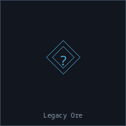 |
exotic | 2 | 450 cr | Pre-spacefaring Earth artifacts fused with asteroid material over millennia. |
| Lithium Ore | 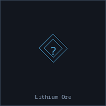 |
uncommon | 1 | 18 cr | Essential for energy storage systems and batteries. |
| Nebula Gas | 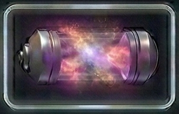 |
uncommon | 2 | 55 cr | Complex mixture of exotic compounds found only in nebulae. |
| Neon Gas | 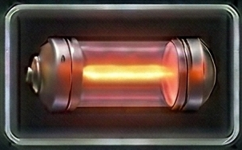 |
common | 1 | 15 cr | Bright noble gas for signage and laser medium. |
| Nickel Ore | 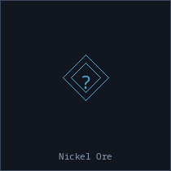 |
uncommon | 1 | 20 cr | Corrosion-resistant ore used in alloy production. |
| Nitrogen Ice | 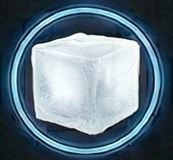 |
common | 1 | 15 cr | Frozen nitrogen used in cooling systems and life support. |
| Null Matter | 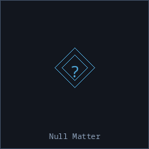 |
exotic | 2 | 450 cr | Material that seems to absorb energy and light. Unique to Voidborn anomaly zones. |
| Palladium Ore | 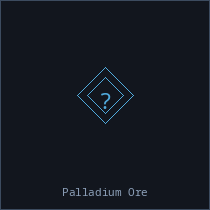 |
rare | 1 | 200 cr | Rare earth element crucial for shield emitter arrays. |
| Phase Crystal | 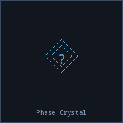 |
legendary | 2 | 500 cr | Exists partially out of phase with normal space-time. Found only in Outer Rim exploration zones. |
| Plasma Gas | 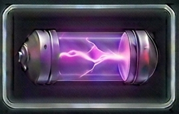 |
uncommon | 2 | 65 cr | Superheated ionized gas captured from stellar coronas. |
| Plasma Residue | 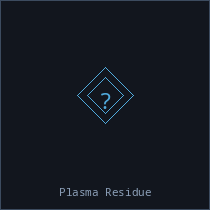 |
exotic | 2 | 280 cr | High-energy plasma condensate harvested from Crimson weapons testing ranges. |
| Platinum Ore | 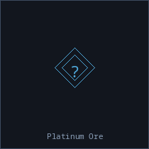 |
rare | 1 | 175 cr | Precious metal with excellent catalytic properties. |
| Polonium Ore ☢ | 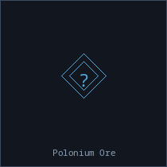 |
exotic | 1 | 250 cr | Extremely radioactive element for compact power sources. |
| Prismatic Nebulite | 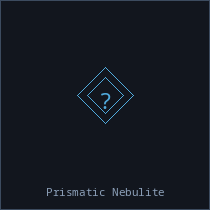 |
exotic | 1 | 380 cr | Multicolored crystalline ore that refracts energy in unusual ways. |
| Quantum Fragments | 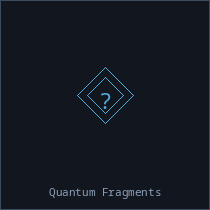 |
legendary | 3 | 600 cr | Unstable particles that exist in multiple states simultaneously. Found only in Outer Rim frontier space. |
| Radium Ore ☢ | 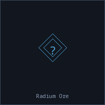 |
rare | 1 | 180 cr | Glowing radioactive element used in specialized equipment. |
| Silicon Ore | 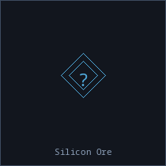 |
common | 1 | 10 cr | Semiconductor base material for computing components. |
| Silver Ore | 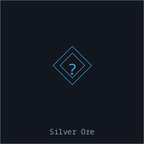 |
uncommon | 1 | 28 cr | Reflective metal with antimicrobial properties. |
| Sol Alloy Ore | 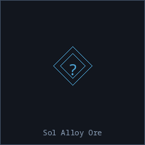 |
exotic | 2 | 300 cr | Ancient alloy deposits from Sol's asteroid belt, prized for their purity. |
| Thorium Ore ☢ | 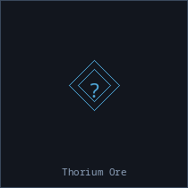 |
rare | 2 | 120 cr | Fertile radioactive material for breeder reactors. |
| Titanium Ore | 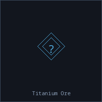 |
uncommon | 1 | 25 cr | Lightweight and incredibly strong, prized for ship hulls. |
| Trade Crystal | 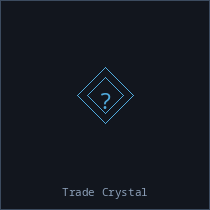 |
exotic | 1 | 550 cr | Rare crystalline formation used as currency backing in Nebula Federation space. |
| Tritium Ice | 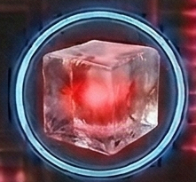 |
exotic | 2 | 200 cr | Radioactive hydrogen isotope ice for high-yield fusion. |
| Tungsten Ore | 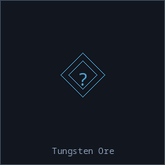 |
uncommon | 2 | 30 cr | Extremely hard metal with the highest melting point of any element. |
| Uranium Ore ☢ | 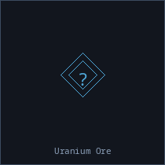 |
rare | 2 | 150 cr | Radioactive heavy metal for fission reactors and weapons. |
| Vanadium Ore | 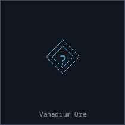 |
uncommon | 1 | 22 cr | Hard transition metal used in high-strength steel alloys. |
| Void Essence | 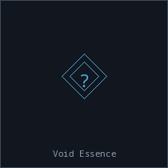 |
exotic | 2 | 400 cr | Crystallized vacuum energy harvested from spatial anomalies. Exclusive to Voidborn territory. |
| Water Ice | 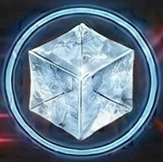 |
common | 1 | 12 cr | Frozen water extracted from comets and ice moons. Essential for life support. |
| Xenon Gas | 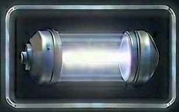 |
uncommon | 1 | 40 cr | Noble gas used in advanced ion thrusters and lighting. |